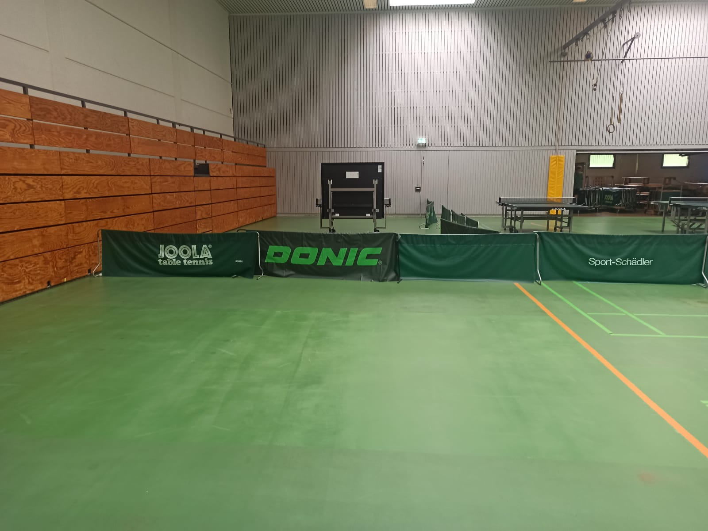

Herzlich willkommen auf der Homepage des TTC Musterhausen Abteilung Tischtennis.
Unsere Trainingszeiten sind:
| Montag | Jugendtraining | 18:00 - 20:00 Uhr |
|---|---|---|
| Mittwoch | Jugendtraining | 18:00 - 20:00 Uhr |
| Freitag | Jugendtraining | 18:00 - 20:00 Uhr |
Die Tischtennisabteilung des TTC Musterhausen bietet tischtennisinteressierten Mädchen und Jungen im Alter zwischen 6 und 10 Jahren die Möglichkeit an einem Schnuppertraining teilzunehmen. Das Training für Anfänger ist jeweils mittwochs von 18:00 bis 19:30 und ist für die Teilnehmer kostenlos.
Beim Schnuppertraining lernst du alle Grundschlagarten des modernen Tischtennissports kennen. Koordination und Schnelligkeitsübungen aber auch der Spaß darf nicht zu kurz kommen. Das Training wird von einem Trainer des TTC geleitet.
Schau doch einfach mal vorbei!